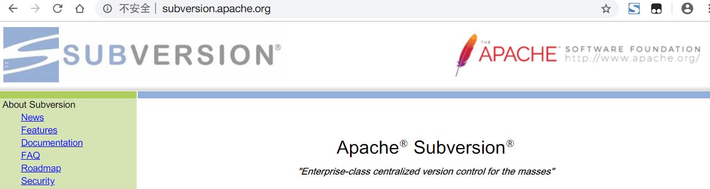
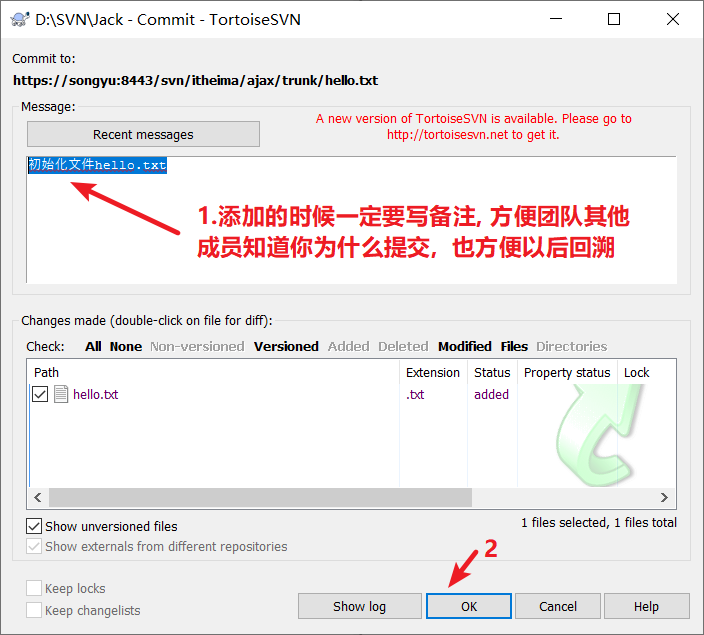
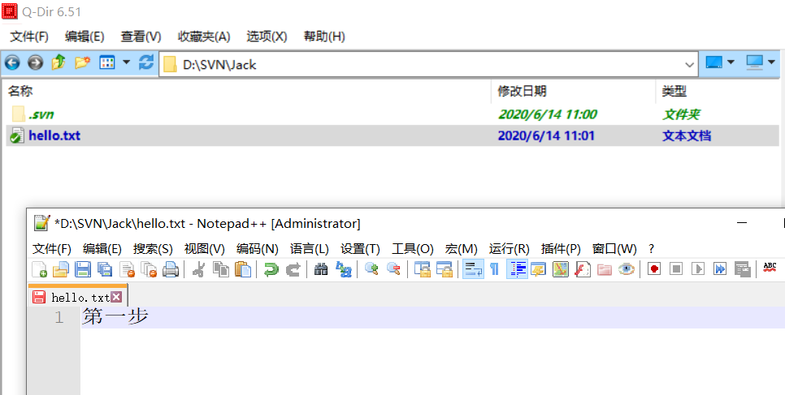
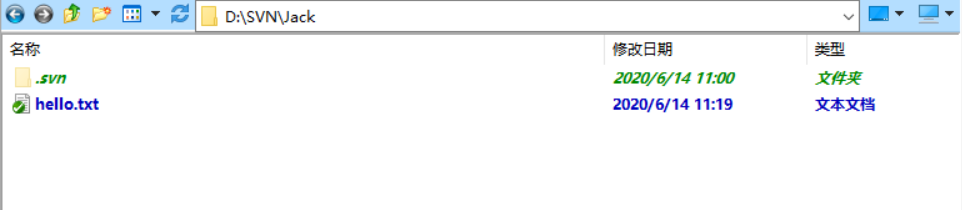
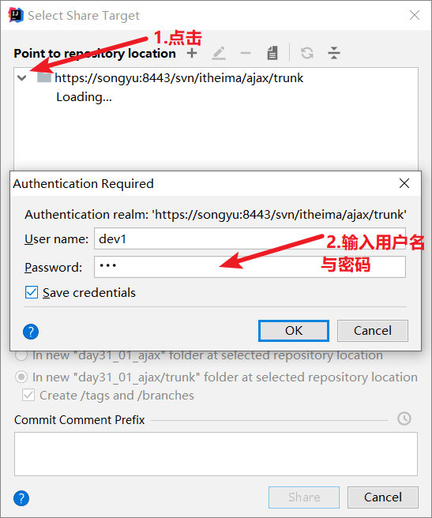
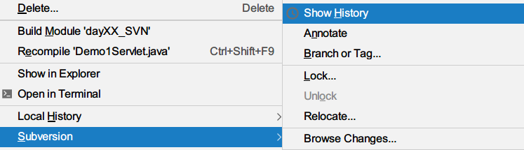
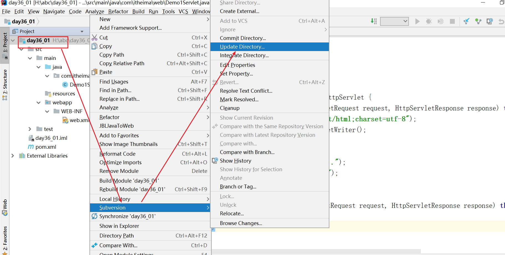

01.学习目标
- 能够了解SVN的作用及相关术语
- 了解常用的版本控制工具有哪些，理解checkout、update、commit的作用
- 掌握SVN常用操作
- 掌握VisualSVN和Tortoise SVN
- 掌握IDEA操作SVN
02.SVN概述【理解】
目标
理解SVN的作用
为什么学习SVN?
场景
没有svn协同资源管理工具, 团队是如何协同管理资源的?
答案
多个开发人员都操作A类, 第一个开发人员操作后拷贝文件传递给其他开发人员, 其他开发人员要通过眼睛观察A类都有哪些改变与自己开发的部分合并, 最终达到协同完成开发
这种解决方案的问题:
1.协同合并资源的效率非常慢
2.完全通过肉眼观察协同合并, 非常不安全
如何解决
使用协同资源管理工具进行协同修改合并
SVN介绍
全称SubVersion, 版本控制. 称为代码资源版本控制管理工具( 协同管理资源（代码）工具)
代码版本控制管理工具的功能
代码备份：svn是一个服务器软件, 所有开发人员的代码都会在这个服务器上进行备份
项目分享：项目开始的时候,由项目组长创建项目（搭建环境）环境分享到svn上, 其他开发人员从svn获取然后开发
==项目整合：多个开发人员将自己的代码进行提交到服务器与服务器上的代码进行自动整合==
权限控制：项目组有开发人员和测试人员, 不同的人员对于代码的权限不一样, 有读取\写入等权限
代码回溯：开发人员每次提交代码都会生成一个文件的版本, 以后想恢复到指定版本非常容易
==协同修改：2个以上开发人员同时修改同一个类里会产生冲突, svn支持解决冲突==
SVN的作用(一句话搞定)
代码版本控制管理工具
主流的版本控制工具
- VSS：Visual Source Safe(Microsoft Visual Studio成员),微软的软件,主要任务是负责项目文件的管理，并发能力低。
- CVS：一套最早用于进行文件版本控制软件，在性能和功能方面低于SVN，大多数软件开发公司都使用SVN替代了CVS。
- ant
- ==SVN：Apache软件基金会名下的一套用于进行文件版本控制软件，它是一种集中式版本控制工具。命令方式，要记命令。CS结构, 以后去企业使用的几率占30%左右==
- ==GIT： 一个开源的分布式版本控制系统，最早是 Linus Torvalds 为了帮助管理 Linux 内核开发而开发的一个开放源码的版本控制软件,以后去企业使用的几率占70%左右==。
SVN的工作模式
CS(Client Server)结构：每个程序员使用客户端去连接SVN服务器，从服务器上下载源代码，修改完成以后上传到SVN服务器上。
svn缺点: 单机服务器, 如果svn挂了, 所有开发人员就无法整合代码了,直到svn修复好才可以继续整合
git优点: 分布式代码版本控制工具, 是有多台服务器, 如果其中一台挂了, 没有关系还有其他服务器, 开发人员可以继续整合, 工作不会停下来;
常用的操作说明
checkout：第一次从svn服务器上获取所有的资源
commit：将自己开发的新代码或新资源文件进行提交到svn上
update：将服务器上最新的代码更新到本地, 对本地来说是新代码,旧代码不用更新
小结
SVN的作用是什么？
- svn的作用： 做代码版本管理
主流的版本控制工具有哪些？
svn
git
03.VisualSVN服务器-概述与安装【理解】
目标
安装VisualSVN服务器
下载
命令行方式版本
官方网站：http://subversion.apache.org/

图形化界面版本
两个安装包，分别对应32位和64位的操作系统
安装步骤
修改计算机名，不要使用汉字或特殊字符
进入欢迎页面
接受软件许可协议
安装服务器和管理员工具，同时修改Path环境变量
选择标准版安装
指定安装目录和仓库位置，服务器端口号，备份目录。其中端口号随意起，但不要占用系统端口号。
注意: 可以通过dos命令查找8443是否被使用
操作如下
如上图没有任何程序找到, 说明8443端口没有被占用
准备安装
安装结束
- 查看服务，检查svn服务是否有正确启动
开启服务端
点桌面图标
使用windows+S 搜索这个软件, 出现以后进行点击
启动界面如下
各目录的说明
04.VisualSVN服务器-仓库资源目录结构说明【理解】
目标
- 创建仓库
- 创建工程目录
仓库结构说明
企业实践
以后大家到公司，会被分配到一个团队中
公司会给每个团队分配一个svn仓库， 每个仓库里面可以创建多个项目
创建仓库
在repositories上右键创建一个仓库
选择仓库类型
给仓库起名
创建一个空的仓库
配置仓库权限，所有用户都可以读写
仓库创建成功，可以看到仓库访问地址
创建好的仓库
创建项目结构
仓库中可以存放多个工程目录，每一个工程目录通常对应一个项目
在仓库中可以创建项目目录
输入工程名称
工程结构
目录名 说明 trunk 主干目录，此目录下的文件为基准文件 (开发时候代码都上传到此目录) branches 用于开发的分支目录 （基于主干目录的一些扩展功能、个性化的定制功能） tags 用于发布项目版本的目录 （项目阶段开发完毕，就把项目放到tags目录，如一期、二期代码）
05.VisualSVN服务器-权限管理【了解】
创建用户
- 点右键创建用户
输入用户名和密码，如：dev1，密码：123456
用户创建成功
为了模拟实际企业项目开发场景，我们创建了两个开发组人员，和两个测试组人员。
创建组
可以对单个帐号进行授权。在实际项目中，为了方便操作，通常以组的方式进行同一授权。以下我们创建一个开发组，一个测试组。
创建一个组devgroup
在组中添加成员
创建2个组，一个开发组devgroup，一个测试组testgroup
给trunk分配权限
把仓库中的每个目录，给组（或者账户）设置权限。以trunk主干目录为例。
需求
先给everyone组trunk不设置任何权限
给开发组trunk读写权限
给测试组trunk只读权限
步骤
- 在trunk上点右键，选择属性
设置默认权限为任何人不能访问
将开发组设置为可读写权限
设置为读和写的权限
将测试组设置为只读权限
最终分配的结果
在浏览器中浏览仓库【了解】
svn服务器内置了客户端使用浏览器访问服务器查看资源
- 在工程名上点右键，复制访问地址到剪贴板。
在浏览器上粘贴地址，输入用户名和密码访问
https://zhong-pc:8443/svn/itheima/ajax
登录后显示结果如下

小结
以下每一项表示什么作用？
06.桌面客户端TortoiseSVN-概述与安装【理解】
目标
安装SVN的概述端
步骤
双击执行

欢迎页面
接收许可协议
全部都选择安装，注：命令行工具要安装， 否则在idea上集成svn的时候会找不到 svn.exe 而报错。
准备安装
安装完成
7.安装成功后的效果,在资源管理器鼠标右键出现如图内容代表安装成功，如果没有可以重启电脑尝试
07.桌面客户端TortoiseSVN-添加与检出【应用】
目标
- Jack (dev1) 创建hello.txt文件添加到服务器
- Rose (dev2) 从服务器中检出文件
添加与检出介绍
检出: 第一次必须做的事情，从svn服务器获取所有资源
添加(可省略): 用于给自己创建的资源添加版本与svn服务器建立连接，方便后续提交操作，也可以不做这
个操作而是直接进行提交给服务器
清除客户端桌面软件的缓存

准备
在d:/SVN/目录下创建2个目录：Jack和Rose，用来模拟2个用户，同时打开2个窗口，左边表示Jack，右边表示Rose。
选择工程中tunk目录，右键复制URL地址
添加步骤
在Jack的窗口，右键选择SVN Checkout，自动出现URL地址和要检出到本地的目录
在jack窗口检出
输入用户名和密码验证(注：建议同学保存登陆的信息，免得等会又要重新输入)。
提示检出完成，这里客户端与服务器创建了连接
注意
在Jack的窗口中出现了一个.svn的目录，表示与服务器连接上了，不要删除这个目录。
注意: 连接文件为隐藏文件, 需要在资源管理器设置查看->勾上隐藏文件显示, 否则不会显示出来
在Jack中创建一个空的hello.txt文件，不要选中文件, 直接鼠标右键选TortoiseSVN->add添加到服务器的版本控制
在hello.txt上出现一个加号的图标 ，如果有没加号也没有关系。重启电脑或注销一次就可以了。
解决方案位置
在hello.txt点击SVN Commit提交到服务器
在对话框中输入一些信息，再输入用户名和密码。

再次输入用户名和密码
提示提交成功

本地刷新

效果
这时服务器端已经有hello.txt文件了
检出步骤
在Rose这边点右键，选择SVN Checkout，自动出现URL地址和要检出到本地的目录
输入用户名和密码，不要保存密码
提示检出完成
这时可以看到Rose窗口下已经有hello.txt文件
清除认证缓存
有几种情况需要清除认证缓存
想在本地使用多个账号登陆，每次输入的账号和密码都不一样
当账号密码修改后
步骤
选择TortoiseSVN->Settings->Save Data中清空一些缓存的数组
将所有clear的按钮点击一遍, 就可以将记住的用户名与密码清除掉
08.桌面客户端TortoiseSVN-提交与更新【应用】
目标
学习文件的提交与更新
提交与更新的介绍
提交: 将本地修改的资源或新创建的资源进行提交给SVN服务器并会生成一个新的版本
注意：每次提交操作都会对资源文件创建新的版本
更新: 将服务器新的资源获取到本地
检查：是第一次获取服务器所有资源
更新：是将于本地资源对比，将服务器上新的资源或是比自己版本高的资源获取到本地
提交步骤
在Jack这边编辑hello.txt，输入一些内容并且保存。图标上有感叹号，表示已经与服务器不同。

在hello.txt上点击鼠标右键，选择SVN Commit，在弹出的信息框中输入一些文字信息

再次输入用户名和密码
这时版本也发生了变化
刷新

更新步骤
在Rose这边的hello.txt上点右键，选择SVN Update
输入用户名和密码
显示更新成功
这时从服务器上更新了hello.txt的内容
小结
- 提交的作用是什么？
- commit ： 把修改的代码提交到svn的服务器上
- 更新的作用是什么？
- update 把svn的服务器代码拉取下来
09.桌面客户端TortoiseSVN-解决冲突【应用】
目标
解决两个人同时修改同一个资源的冲突问题
冲突介绍
发生在多个人同时操作一个文件，而且是操作了同一个文件夹的同一行代码。
注意：在企业中一定要谨慎处理，可能不小心就将别人的成功给删掉了
为什么解决冲突?
冲突必须解决，否则以后无法提交资源进行整合
演示冲突解决步骤
左边Jack再次打开hello.txt文件编辑，在第2行输入内容，保存后提交SVN Commit
保存
提交

效果
右边Rose也同时打开hello.txt文件编辑同一行，保存后，选择提交SVN Commit
冲突产生前提: rose不更新资源, 直接在旧版本上编辑文件后提交
保存后效果
提交
这时提交会出现提交失败，因为出现了版本冲突
点击ok
第1项表示更新，自己解决冲突。第2项表示取消提交。
选择更新，发现冲突。
点击OK
在接下来出现的窗口中点”取消”
!
点击刷新
这时在Rose目录下出现几个不同扩展名的文件
在Rose中选中hello.txt，点右键选中TortoiseSVN->Edit conflicts。
左上显示别人的，右上显示我的，下面显示合并后的。
页面介绍
在下面合并的每一行可以点右键，可以选使用别人的还是自己的。如果同时保留2行，可以选我的在前面还是在后面。
修改完成以后点上面工具栏：Mark as resolved (标记为已解决冲突)，这时Rose下多余的文件自动删除。
点击关闭
再次在hello.txt上点右键，选择SVN Commit，提交到服务器中。
刷新当前目录
这时左边的Jack如果更新，也能看到最新的代码
更新之后,查看
小结
冲突是如何产生的？
10.桌面客户端TortoiseSVN-回滚到指定版本【应用】
目标
- 查看每个版本
- 回滚到指定版本
场景
Rose想将代码回滚到版本3的情况, 并且将版本3的内容提交为服务器最新的版本内容
查看版本号
Rose在本地点右键，选择TortoiseSVN -> Show log
在打开的窗口中显示版本，作者，修改的时间，信息等。
回滚到指定版本
回滚到版本3
Rose在hello.txt上点右键，选择TortoiseSVN->Update to revision
打开的窗口中，HEAD revision表示最后的那个版本，右边的按钮也可以显示所有的版本。下面的Revision可以输入要回滚到的版本。
这时Rose中的hello.txt就回滚到指定的版本了
注意: 只有客户端Rose这里的文件是版本3的内容, 然而服务器最新的版本依然是5的内容
小结
如果想回到以前的某个版本，我们可以进行什么样的操作？
update to version
11.桌面客户端TortoiseSVN-删除以及断开连接【应用】
目标
删除和断开连接
应用场景
指定的资源文件不要了,就可以删除, 分为本地删除与远程删除
删除文件步骤
Jack在本地删除hello.txt文件，但服务器中的并没有删除
jack更新获取最新版本的hello.txt
本地删除效果, hello.txt被删除了
查看远程svn服务器发现是没有删除
在Jack目录里右键选择SVN Commit提交
在出现的对话框中，会用红色显示与服务器不同的文件列表
查看服务器上trunck目录刷新发现hello.txt文件已被删除
本地与svn服务器断开连接
如果要彻底断开连接，则删除当前目录下隐藏的.svn目录即可

应用场景
资源不想使用svn控制就可以断开连接
12.IDEA客户端-分享项目【应用】
目标
分享项目
为什么分享项目?
因为项目组最开始,由架构师搭建项目环境(使用的框架\配置文件\jar包\工具类), 架构师会将项目环境分享到svn服务器上, 其他项目组成员从svn服务器上获取检出项目进行开发
创建一个模块(搭建项目环境)
在d:/SVN/Jack目录下，使用maven创建一个Web模块
使用插件JBLJavaToWeb转换为web工程
在pom.xml中导入servlet依赖
<?xml version="1.0" encoding="UTF-8"?>
<project xmlns="http://maven.apache.org/POM/4.0.0" xmlns:xsi="http://www.w3.org/2001/XMLSchema-instance" xsi:schemaLocation="http://maven.apache.org/POM/4.0.0 http://maven.apache.org/xsd/maven-4.0.0.xsd">
<modelVersion>4.0.0</modelVersion>
<groupId>com.itheima</groupId>
<artifactId>day36_01</artifactId>
<version>1.0-SNAPSHOT</version>
<packaging>war</packaging>
<dependencies>
<dependency>
<groupId>javax.servlet</groupId>
<artifactId>javax.servlet-api</artifactId>
<version>3.1.0</version>
</dependency>
</dependencies>
</project>
创建一个Servlet
package com.itheima.web; import javax.servlet.ServletException; import javax.servlet.annotation.WebServlet; import javax.servlet.http.HttpServlet; import javax.servlet.http.HttpServletRequest; import javax.servlet.http.HttpServletResponse; import java.io.IOException; import java.io.PrintWriter; @WebServlet("/demo1") public class Demo1Servlet extends HttpServlet { protected void doPost(HttpServletRequest request, HttpServletResponse response) throws ServletException, IOException { response.setContentType("text/html;charset=utf-8"); PrintWriter out = response.getWriter(); out.write("呵呵"); } protected void doGet(HttpServletRequest request, HttpServletResponse response) throws ServletException, IOException { doPost(request, response); } }
开启idea的SVN工具支持
选择VCS –> Enable Version Control Integration
选择Subversion工具，这时工程是橙色
注意: idea2019.1的版本开启svn后, 项目空间中的项目只要没有分享到svn上就会出现的红色
其他的idea版本(2019.2版本)有可能不会变为如上的红色, 需要单独设置, 如下图才会变成红色
如果启用svn后，项目没有变红色需要如下操作
点击File->settings
如果出现错误，选择svn.exe文件所在目录(图形客户端svn.exe文件)
C:\Program Files\TortoiseSVN\bin\svn.exe
将idea的项目分享项目到SVN上
在工程上点右键
选择: Subversion->Share Directory…
在对话框中点上面的加号输入服务器的URL地址。(可以在服务器上的trunk目录上右键复制服务器目录地址)
输入用户名和密码，可以保存密码

下面有三种目录方式，我们选择第二种方式。
确定后可以选择SVN的版本格式
更新成功
分享成功后工程变成绿色，这时服务器并没有内容，只是创建了一个连接关系。
svn服务器上只有一个工程目录, 并没有工程里面的资源文件
服务器效果
提交资源到SVN服务器上
在工程上点右键，选择Subversion->Commit Directory
注：target目录等无关的目录和文件不用上传到服务器上

注意: 如果项目环境的资源文件过多, 一定注意不要再idea里面提交资源到服务器上, 否则会卡死最后导致超时失败. 如果资源文件过多去资源管理器使用TortoiseSVN图形界面客户端进行提交即可
上传之前可以输入一些描述信息
注：如果代码中有一些错误或者警告信息，会导致提交失败。
如果代码中有警告，会出现如下提示，但我们可以依然选择提交：Commit
!
提交成功了
上传成功后模块变成了黑色

提交成功后, 项目的资源字体为黑色, 但是idea有的时候有延迟, 导致过一会才会变为黑色
服务器有文件了

小结
第一次提交项目的时候需要做哪些的操作？
- share directory 分享
- commit directory 提交代码13.IDEA客户端-操作技巧【应用】
提交前不进行语法检查
注：在第3步中，如果想在提交前不进行代码检查，可以在idea中去掉下面的勾
2017版本找不到该选项，可以在提交的时候写上
传到SVN服务器慢的问题
清除保存的用户名和密码
14.IDEA客户端-检出项目【应用】
目标
Rose从服务器中检出Jack的项目
步骤
关闭之前的idea，Rose打开idea，在欢迎页面上选择Check out from Version Control，选择Subversion

在弹出的窗口中如果没有地址，则输入SVN服务器的请求地址，找到需要检出的项目，检出。
指定检出的地址，如：放在d:/SVN/Rose目录
在Destination中选择合适的一项，这里选择第三项。Update/Switch to revision中选择HEAD，表示选最新版，也可以在Specified中第几版。
选择相应的Subversion版本格式

提示是否将工程描述文件(扩展名为.iml)这个文件从SVN服务器中删除，选择No，不删除这个文件。
- 如果上一步选择了yes，则会出现新的提示：是否将当前这个工程的iml文件添加到SVN服务器，可以选择Add。(上面点击了No就没有这一步)
检出后idea中就有项目了，在d:/temp/Rose目录下可以发现检出的代码。
15.IDEA客户端-提交与更新【应用】
目标
项目的提交与更新
当前状态
目前有2份代码，分别在Jack目录下，另一份在Rose的目录下。目前Rose的代码是打开的。
选择File->Open Recent -> Manage Projects，在另一个idea窗口中打开了以前的项目，这时2份项目同时打开了。
如何设置在新窗口中打开项目
注：如果要在新窗口中打开项目，也可以进行如下设置：
提交步骤
在Jack位置添加代码并提交
在Jack的Servlet上点右键：Subversion->Commit File（提交单个文件）
第二种方式： 提交整个模块，提交整个模块的时候他们只会提交你修改过的文件

- 也可以在某个目录上点右键，提交整个目录
更新步骤
Rose在自己的Servlet上点右键：Subversion->Update File
==推荐大家选中模块去更新，这样子可以把整个模块的代码全部都更新下来==
在出现的窗口中可以确认一下要更新的文件，点OK。
这时可以发现Rose得到了最新的源代码
16.IDEA客户端-解决冲突【应用】
目标
解决冲突
冲突前步骤
Jack在idea的Servlet中又输入了新的代码: 添加第三步
在Servlet上点右键：Subversion->Commit File
出现冲突
没有更新, Rose直接输入新的代码
直接提交。在Event Log中出现冲突问题
代表出现冲突
这时在Servlet文件上点右键，选择更新文件
!
- 出现版本冲突的问题，有三个按钮：接受我的，接受他们的，合并
- 点合并按钮（Merge），进入解决冲突界面，最左边是自己的，中间是合并的结果(Rose修改前的)，最右边是服务器的。可以点左边或右边的小箭头选择左边或右边的代码行，也可以选择下面的按钮接受左边或接受右边。

进行合并操作
- 解决冲突后，目录下多余的文件消失
这时Jack需要更新，才能看到最新的代码
小结
由于代码冲突提交失败的时候我们应该做哪些的操作？
- 更新
- 合并
- 提交17.IDEA客户端-版本回退【应用】
目标
回退到指定的版本
步骤
- 在Servlet上点右键：Subersion -> Show History

选择相应的版本
在相应的版本上点右键，选择get就可以回到这个版本了
- 回溯之后提交就会将服务器的版本更新

提交后的效果
历史版本回退推荐的方式：

18.IDEA客户端-断开连接【应用】
目标
- 安装断开连接的插件
- 在idea中断开连接
原理
断开连接的原理, 就是到资源管理里面删除对应.svn目录
安装插件
插件会自动到资源管理器删除对应的.svn目录
- 在线搜索市场安装
- 也可以使用本地安装
- 选择相应的插件文件，点OK即可
- 安装完成以后需要重启idea
步骤
安装完插件以后在VCS目录下会多出一项：SVN Disconnect
删除后目录上的图标，并且目录下也没有.svn目录了
注意: 如果想重新建立项目与svn连接, 那需要重新开启SVN工具支持, 重新检出项目